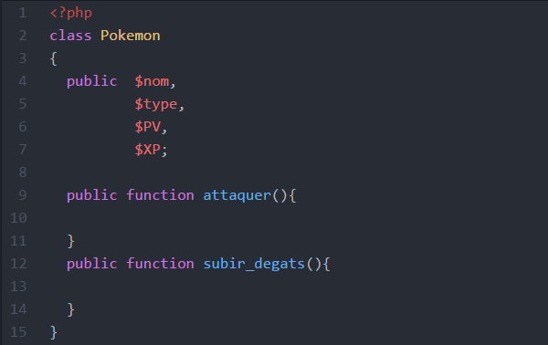
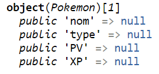

On utilise une classe comme un moule (à cake)
pour créer des objets de "forme" identique.
Construisons une classe Pokemon (nom de classe en Maj par convention).
Quelles sont les caractéristiques communes à tous les pokémon ?
Il s'agit des attributs des objets-pokémon que nous allons créer après, en utilisant cette classe (comme moule).
Autre question : que font les pokémon ?
Réponse : ils attaquent ! Et donc, forcément, ils perdent des PV lorsqu'ils sont attaqués...
De plus, à force d'attaquer, ils gagnent en expérience !
Ce sont des fonctions.
Notre classe aura donc la structure suivante :  (l'explication du mot-clé "public" viendra plus loin)
Maintenant, si l'on instancie (= créer) un pokemon comme ceci :
Et qu'ensuite, on fait un var_dump de ce premier objet, on obtient ceci :
